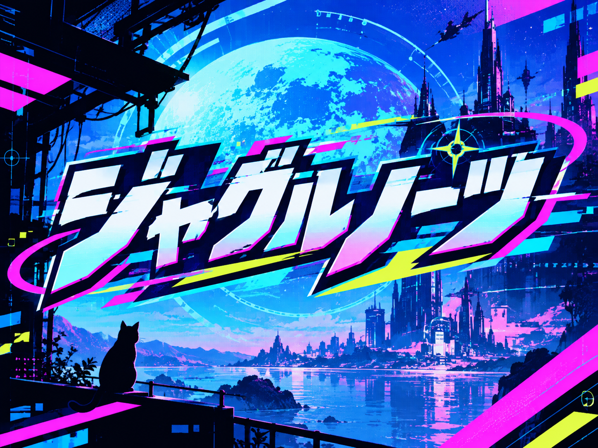

ジャグルノーツ 🌟

ジャグルノーツ 🌟
🔵 画面の
左側
をタップ＝左手 🔴 画面の
右側
をタップ＝右手（どこでもOK）
🎵 曲選択へ
📊 記録
⚙ 設定
⛶ 全画面にする
iPhoneは「共有」→「ホーム画面に追加」から開くと全画面で遊べます
曲
難易度
🌱 かんたん
🎵 ふつう
🔥 むずかしい
ノーツの変化
固定
そこそこ
多様
🎵 スタート！
🎯 練習
← メインメニュー
🎯 練習モード
速度
開始
終了
🔁 ループ ON
🎯 同時ノーツの場所へ
練習では記録は保存されません
🎯 練習スタート
← 曲選択
設定
🎵 曲
100%
🔔 効果音
100%
iPhoneでは曲の音量は本体の音量ボタンで調整してください
タイミング調整
−
0 ms
＋
🎯 タップで自動計測
ボールが音より先に着く感じなら「＋」、遅い感じなら「−」
← メインメニュー
🎵 曲選択に戻る
📊 記録
🔵
左手:
A
キー / 上半分割 🔴
右手:
L
または
J
キー / 下半分割
🔥
10コンボ到達でFEVERモード突入！
スコア倍率がアップ＆豪華背景演出！
⏸
⏸ 一時停止
▶ つづける
🔄 最初からやり直す
🎵 終了して曲選択へ
◀ 左手 TAP
TAP 右手 ▶
📱
スマホを横向きにしてください